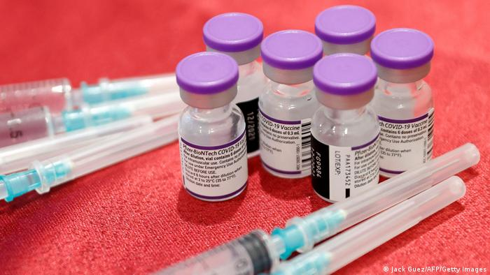

NEWS
COVID: BioNTech-Pfizer says three shots protects children under 5
A three-dose vaccine for children between the ages of 6 months and 5 years offers "high level of protection," according to the vaccine maker. The age group is considered not eligible in most countries.

BioNTech-Pfizer announced on Monday that its COVID-19 vaccine offers strong protection for children aged 6 months to 5 years old.
Pfizer said in a tweet that the company, along with BioNtech, had "shared positive data from our COVID-19 vaccine trial" involving children of that specific age group.
What did the results show?
According to a statement from the companies, three doses of vaccine administered at three micrograms in a clinical trial, brought about a strong immune response.
Vaccine efficacy was found to be 80.3%, according to preliminary results.
"We are pleased that our formulation for the youngest children, which we carefully selected to be one-tenth of the dose strength for adults, was well tolerated and produced a strong immune response," said Pfizer CEO Albert Bourla in a statement.
"The study suggests that a low 3-ug dose of our vaccine, carefully selected based on tolerability data, provides young children with a high level of protection against the recent COVID-19 strains," said Ugur Sahin, CEO and co-founder of BioNTech.
Final vaccine efficacy data will be shared once available.
Data to be evaluated
The US Food and Drug Administration (FDA) has tentative meetings planned in the coming weeks to consider authorizing COVID-19 vaccines among the youngest children.
They remain the only age group not considered eligible in most countries, a source of concern for many parents.
In September 2021, experts in a US federal advisory panel expressed concern over the necessity of giving third shots to younger Americans.
At the time, Dr. Cody Meissner of Tufts Medical Center said he was worried about extra doses being administered to younger age groups considering instances of heart inflammation seen in younger males after a second shot.
Severe disease from COVID-19 among children under the age of 5 is very rare, although it can still occur.
FDA vaccine chief Dr. Peter Marks said the agency will "move quickly without sacrificing our standards,'' as it weighs up the vaccine doses from both BioNTech-Pfizer and rival pharmaceutical company Moderna, which has a two-dose offering that is being assessed.